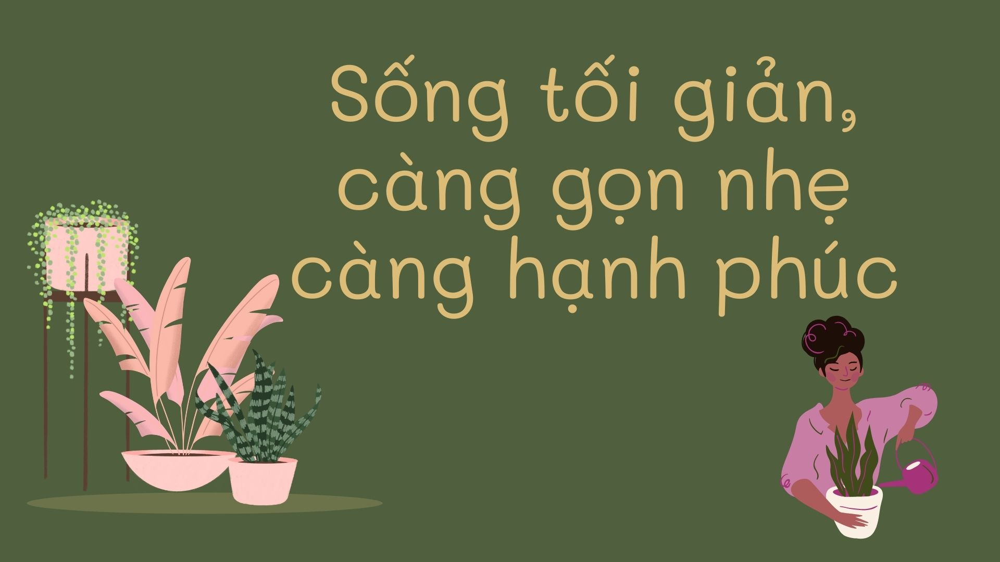

Lối sống tối giản, ăn uống minh triết và làm việc hiệu quả
Các nghiên cứu khoa học và chuyên gia nêu trên cung cấp dẫn chứng rằng dọn dẹp gọn gàng giảm stress[1][3], ăn uống có chánh niệm cải thiện hành vi ăn uống[5][6], và các kỹ thuật quản lý thời gian (như pomodoro, GTD, deep work) đều hướng tới tăng năng suất làm việc[14][11][12][15]. Các phương pháp này đã được nhiều cá nhân và tổ chức trên thế giới áp dụng thành công, phù hợp với người trưởng thành có công việc ổn định muốn nâng cao chất lượng sống và hiệu quả làm việc.
✍️ Vũ Thành Công
📅 18-02-2026
📂 Trí tuệ
👁️ Lượt xem
0

0
Lối sống tối giản khuyến khích loại bỏ những thứ dư thừa về vật chất, thông tin và cam kết để giảm gánh nặng tinh thần. Nhiều nghiên cứu đã chỉ ra rằng môi trường bừa bộn tăng mức cortisol (hormone căng thẳng) và gây suy giảm tập trung[1]. Ảnh hưởng tâm lý của “clutter” (chất bừa bộn) cũng được ghi nhận: người ở nhà lộn xộn có cảm giác an toàn và hạnh phúc thấp hơn, dễ căng thẳng hơn[2][3]. Dưới đây là một số phương pháp thực hành tối giản đã được phổ biến:
KonMari (Marie Kondo) – phương pháp dọn dẹp căn bản bằng cách phân loại theo loại đồ dùng (quần áo, sách, giấy tờ…) và chỉ giữ lại những món “khiến ta vui” (spark joy). Quy tắc chính là cảm ơn đồ vật trước khi vứt bỏ và sắp xếp từng thứ gọn gàng. Lợi ích của KonMari là không gian gọn gàng, giảm thời gian tìm kiếm và giảm lo âu về vật chất. Một nghiên cứu khảo sát người dùng KonMari cho thấy sau khi dọn dẹp, họ không chỉ cảm thấy dễ dàng bỏ bớt đồ đạc mà còn cho biết việc dọn dẹp đã trở thành “gần như thú vị” và cải thiện tâm trạng[4]. Phương pháp này được ứng dụng rộng rãi (sách bán hàng triệu bản, các buổi hội thảo và show truyền hình toàn cầu). Khuyến nghị: phù hợp với người có nhiều đồ dùng cần phân loại, dành 1-2 tuần liên tục để dọn từng loại, sau đó duy trì bằng quy tắc “một vào một ra”.
The Minimalists (Ryan Nicodemus) – cách tiếp cận lối sống tối giản hướng vào việc thẩm định giá trị của món đồ/tình huống vào giá trị tinh thần chúng mang lại. Nội dung chính là “loại bỏ cái không cần để tập trung vào điều quan trọng nhất”. Họ đề xuất quy tắc giá trị cốt lõi (core values) để quyết định giữ hay bỏ và kêu gọi hạn chế mua sắm, quyên góp đồ không dùng. Ưu điểm là giúp giảm nợ nần, tăng tự do tài chính và cảm giác thanh thản; nhiều người theo dõi họ cho biết cảm thấy cuộc sống ý nghĩa hơn. Phương pháp này không có quy tắc cứng nào bắt buộc, nên linh hoạt điều chỉnh theo hoàn cảnh. Khuyến nghị: những ai muốn giảm áp lực tài chính hoặc đơn giản hóa lối sống, có thể bắt đầu bằng “tuần dọn dẹp” (cứ mỗi ngày xóa bỏ một đồ vật không cần thiết) hoặc lập danh sách 3-5 món cần mua thực sự.
Digital Minimalism (Cal Newport) – nguyên tắc chuyển sang sử dụng công nghệ một cách có chủ đích hơn. Cốt lõi là thắt chặt giới hạn với mạng xã hội, ứng dụng giải trí, tin tức,… để chỉ giữ lại những kỹ thuật số mang giá trị lớn. Newport đề xuất giai đoạn “thanh lọc kỹ thuật số” 30 ngày (ngừng dùng mạng xã hội, trò chơi, email cá nhân, v.v.) rồi từ từ thêm lại những thứ thực sự phục vụ giá trị cá nhân. Ưu điểm: giảm xao lãng, tăng thời gian cho gia đình và sáng tạo. Khuyến nghị: dành 1 tháng đầu không dùng mạng xã hội/thiết bị phụ, sau đó chỉ sử dụng những ứng dụng cần thiết (ví dụ chỉ dùng điện thoại vào những giờ cố định). Nhiều chuyên gia và tổ chức (thuật ngữ “digital detox”) đã áp dụng ý tưởng này để cải thiện tinh thần và năng suất.
Quy tắc 5S/Kaizen cá nhân – lấy từ triết lý sản xuất của Nhật (Seiri, Seiton, Seiso, Seiketsu, Shitsuke). Tương đương: “sắp xếp – ngăn nắp – sạch sẽ – tiêu chuẩn hóa – duy trì”. Ví dụ, đầu tiên hãy loại bỏ (Sort) hết giấy tờ/vật dụng không cần thiết, sau đó sắp xếp (Set in order) từng vật vào vị trí xác định. Sau cùng, duy trì (Sustain) bằng kiểm tra định kỳ. Ưu điểm là tổ chức mọi thứ có hệ thống, giảm thời gian tìm kiếm và duy trì không gian gọn gàng lâu dài. Nhiều nghiên cứu trong môi trường công nghiệp xác nhận 5S cải thiện hiệu quả công việc và giảm lãng phí thời gian. Áp dụng: mỗi cuối tuần dành ít phút kiểm tra/tiêu chuẩn hóa tổ chức đồ đạc, công cụ, thư điện tử,… nhóm theo danh mục dễ quản lý.
Ăn uống minh triết
Ăn uống minh triết (như “chánh niệm khi ăn”) tập trung vào ý thức trong quá trình ăn uống: tận hưởng mùi vị, cảm nhận thức ăn và nhận biết tín hiệu đói/no của cơ thể. Ví dụ, người thực hành ăn chánh niệm sẽ ăn chậm lại, nhai kỹ, để ý hương vị và màu sắc món ăn, đồng thời ngừng ăn khi đạt 80% no. Các nghiên cứu cho thấy phương pháp này giúp giảm ăn vô độ, ăn theo cảm xúc và cải thiện kiểm soát cân nặng. Cụ thể, một phân tích tổng hợp nhận định can thiệp chánh niệm tập trung vào ăn uống giúp giảm đáng kể các đợt ăn vô độ và ăn cảm xúc[5]. Một thử nghiệm lâm sàng 6 tuần với người béo phì cho thấy nhóm tham gia chương trình Ăn Chánh Niệm đã giảm cân trung bình, cải thiện tâm lý và giảm căng thẳng liên quan đến ăn uống[6]. Dưới đây là một số phương pháp ăn minh triết tiêu biểu:
Ăn chánh niệm (Mindful Eating) – gốc từ thực hành thiền chánh niệm, áp dụng cho bữa ăn. Nội dung: để điện thoại xa tầm với, tập trung hoàn toàn vào thức ăn trong dạ dày. Tốc độ ăn được hãm lại, mỗi miếng được nhai kỹ, đặt đũa xuống giữa các lần ăn. Hãy chú ý hương vị, cảm giác của thức ăn và dừng ăn ngay khi cơ thể báo no (trước khi tràn ngập). Ưu điểm là giúp nhận diện tín hiệu đói/no chính xác hơn, giảm tình trạng ăn quá nhiều trước khi não kịp báo no. Nghiên cứu cho thấy khi thực hành ăn chánh niệm, người thừa cân/béo phì giảm được các cơn ăn vô độ từ ~4 lần/tuần xuống còn ~1–2 lần, đồng thời giảm stress liên quan đến ăn uống[6]. Khuyến nghị: dành ít nhất 10–20 phút cho mỗi bữa, không làm việc khác cùng lúc, và tập trung vào mỗi thìa/bát ăn.
Chế độ Địa Trung Hải (Mediterranean Diet) – mô hình ăn uống khoa học do các chuyên gia y tế đề xuất, dựa trên truyền thống dinh dưỡng vùng Địa Trung Hải (Italia, Hy Lạp). Cốt lõi: tăng cường rau quả, ngũ cốc nguyên hạt, các loại hạt, dầu ô liu, cá biển và các nguồn protein thực vật; hạn chế thịt đỏ và thực phẩm chế biến. Quy tắc: ăn nhiều thực phẩm thực (rau, quả, ngũ cốc nguyên hạt, đậu, hạt); dầu ô liu là chất béo chính; tiêu thụ vừa phải cá, trứng, sữa; rất ít đồ ngọt và thịt đỏ. Ưu điểm là giảm nguy cơ tim mạch, tiểu đường và kéo dài tuổi thọ. Nhiều nghiên cứu lâm sàng và theo dõi trong cộng đồng cho thấy người ăn theo kiểu Địa Trung Hải trung bình có giảm ~25% nguy cơ sự kiện tim mạch (như nhồi máu cơ tim, đột quỵ) so với ăn theo chuẩn thông thường[7]. Một nghiên cứu theo dõi 25 năm ở hơn 25.000 phụ nữ Mỹ ghi nhận những người tuân thủ chế độ này cao nhất giảm được khoảng 23% nguy cơ tử vong chung[8][9]. Được nhiều tổ chức y tế (AHA, WHO, các hiệp hội tim mạch châu Âu) khuyến nghị. Áp dụng: người trưởng thành nên dùng rau quả và ngũ cốc nguyên hạt ở mỗi bữa, thay thế bơ/bơ lạt bằng dầu ô liu, thay thịt đỏ bằng cá hay đậu, và hạn chế đường cùng thực phẩm công nghiệp.
Triết lý ăn của “Blue Zones” (hara hachi bu) – rút ra từ nghiên cứu vùng dân sống thọ nhất thế giới (Okinawa – Nhật; Ikaria – Hy Lạp; Sardinia – Ý; Nicoya – Costa Rica; Loma Linda – Mỹ). Một trong “9 yếu tố sống lâu” của họ là chế độ ăn chủ yếu thực vật và ăn uống chánh niệm. Điển hình nhất là hara hachi bu ở Okinawa: “ăn cho đến khi chỉ no khoảng 80%” thay vì ăn thật no[10]. Cụ thể, nguyên tắc thực hành hara hachi bu thường bao gồm: ấn định 20 phút cho mỗi bữa (khi thời gian hết, dừng ăn), nhai kỹ, để ý cảm giác no vừa đủ. Ưu điểm: giảm tiêu thụ calo tổng thể, duy trì cân nặng khỏe mạnh và kéo dài tuổi thọ (dân Okinawa thường ít bệnh tật so với tuổi). Khuyến nghị: bạn có thể áp dụng bằng cách ăn chậm, lấy khẩu phần vừa phải và cố gắng dừng ăn khi đã chỉ còn 1/4 bữa chưa xuống dạ dày.
Làm việc hiệu quả
Làm việc hiệu quả đòi hỏi quản lý thời gian và tập trung cao độ. Dưới đây là một số phương pháp được ưa chuộng và có nền tảng khoa học, tâm lý học:
Kỹ thuật Pomodoro – chia thời gian làm việc thành các phiên ngắn (thường là 25 phút) tập trung cao độ, xen kẽ với nghỉ ngắn (5 phút). Sau 4 phiên pomodoro có thể nghỉ dài hơn (~15–30 phút). Cách này giúp não “tập trung nghỉ ngơi luân phiên”, giảm mệt mỏi và tăng động lực bắt đầu công việc. Ưu điểm: dễ bắt đầu, giảm trì hoãn. Một nghiên cứu cho thấy khi sinh viên áp dụng Pomodoro thì mặc dù họ cảm thấy đỡ mệt hơn nhờ nghỉ đều, nhưng tổng năng suất cuối cùng không khác biệt đáng kể so với kiểu tự nghỉ theo cảm giác hoặc nghỉ theo mô hình “flowtime”[11]. Tuy nhiên, nhiều người vẫn cho rằng việc có lịch nghỉ cố định giúp tránh ngồi lì quá lâu và duy trì nhịp làm việc. Áp dụng: nếu bạn thường bị xao nhãng, hãy thử đặt hẹn giờ 25 phút không gián đoạn (tắt thông báo), sau đó đi lại, uống nước trong 5 phút. Lặp lại vài lần trong ngày.
GTD (Getting Things Done) – hệ thống quản lý công việc của David Allen. Nguyên lý: bắt (capture) tất cả ý tưởng, công việc và dự định ra khỏi đầu bằng cách ghi vào công cụ ngoại vi (sổ tay, app); làm rõ (clarify) mỗi mục thành hành động cụ thể; tổ chức (organize) theo danh mục (dự án, việc cần làm ngay, việc có thể làm sau,…); vật (review) định kỳ; xử lý (engage) công việc theo ngữ cảnh và mức độ ưu tiên. Ưu điểm: giải phóng bộ nhớ làm việc và giảm lo lắng vì bạn không phải “nhớ hết trong đầu”. Trên phương diện khoa học nhận thức, GTD phù hợp với nguyên lý ghi nhớ phân tán: não bộ cần môi trường bên ngoài tin cậy để lưu trữ thông tin và khởi động hành động[12]. Nhiều chuyên gia quản lý và công ty lớn dùng GTD để sắp xếp việc cá nhân. Khuyến nghị: thử bắt đầu bằng việc viết ra tất cả các nhiệm vụ hiện tại, sau đó mỗi tối hoặc mỗi tuần kiểm tra danh sách này và lên kế hoạch cho ngày hôm sau.
Ma trận Eisenhower – công cụ ưu tiên công việc theo 4 ô ma trận: Quan trọng/Cấp thiết, Quan trọng/Không cấp thiết, Không quan trọng/Cấp thiết, Không quan trọng/Không cấp thiết. Mỗi nhiệm vụ được phân vào một ô dựa trên mức độ quan trọng và tính khẩn cấp[13]. Ví dụ, công việc quan trọng nhưng không gấp (chiến lược dài hạn) nên được lập kế hoạch xử lý đầu; quan trọng và gấp (khủng hoảng) phải làm ngay; không quan trọng nhưng gấp (nhờ vả) nên cân nhắc giao người khác; không quan trọng lẫn không gấp (xem tin tức) có thể loại bỏ. Ưu điểm: giúp bạn nhận ra công việc thực sự mang lại giá trị và tránh bị đổ dồn làm những việc vặt. Áp dụng: mỗi sáng dành vài phút liệt kê việc cần làm và xếp vào ma trận, sau đó làm theo thứ tự ưu tiên đã xác định.
“Công việc Sâu” (Deep Work) – khái niệm của Cal Newport, nhấn mạnh làm việc trong trạng thái tập trung cao độ, không gián đoạn trên một nhiệm vụ cần suy nghĩ (như nghiên cứu, lập trình). Newport trích dẫn lời nhà tâm lý Adam Grant: “Để đạt hiệu suất đỉnh cao, bạn cần làm việc liên tục trong thời gian dài với sự tập trung hoàn toàn vào một nhiệm vụ”[14]. Ví dụ, 90–120 phút không email, không điện thoại có thể cho hiệu quả cao hơn nhiều so với làm việc cắt vụn cả ngày. Ưu điểm: tăng chất lượng và tốc độ xử lý công việc phức tạp. Được nhiều chuyên gia (kể cả giảng viên hàng đầu như Adam Grant) khuyên áp dụng. Khuyến nghị: nếu cần viết báo cáo hay giải quyết vấn đề khó, hãy cài đặt thời gian không bị gián đoạn (tắt thông báo điện thoại/ứng dụng, đóng cửa phòng nếu có thể) và tập trung hết sức.
Nghỉ giải lao hợp lý – thói quen nghỉ giữa giờ quan trọng để duy trì năng lượng và khả năng tập trung. Nghiên cứu của Viện Y tế Quốc gia Mỹ (NIH) cho thấy não bộ trong các khoảng nghỉ ngắn có thể “chạy lại” và củng cố kỹ năng vừa học[15]. Điều đó ngụ ý cứ sau mỗi ~1 giờ làm việc căng thẳng, bạn nên đứng dậy đi lại, căng giãn hoặc trò chuyện ngắn để não hồi phục. Một thí nghiệm (cũng của NIH) còn ghi nhận việc học một kỹ năng mới được tăng tốc nhờ nghỉ ngơi ngắn xen kẽ (ví dụ luyện gõ bàn phím 10 giây nghỉ 10 giây)[15]. Ngoài ra, một nghiên cứu về gián đoạn tự ý cho thấy nếu bạn tự quyết định nghỉ (kiểu “xao nhãng tự phát”), điều này có thể giảm động lực và làm chậm tiến độ công việc hơn là nghỉ ngắn theo lịch[16]. Khuyến nghị: cố gắng áp dụng quy tắc 50–10 (50 phút làm việc, 10 phút nghỉ) hoặc 52–17 (52 phút làm, 17 phút nghỉ) tùy nhu cầu. Trong giờ nghỉ, không nên lướt mạng xã hội mà tốt nhất đi bộ nhẹ, uống nước hoặc thiền ngắn.
Vũ Thành Công
Chia sẻ về cuộc sống,
gia đình, quê hương,
và những trải nghiệm.
Có thể quý vị quan tâm
💌 Gửi góp ý
🌱 Nếu bạn có điều muốn chia sẻ,
hãy để lại lời nhắn bên dưới.
Xin trân trọng cảm ơn!